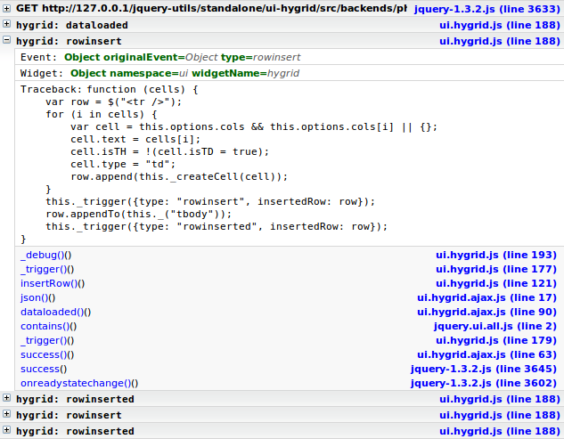

Introduction
jquery.hygrid is, you guessed it, yet another jQuery grid plugin. It was inspired by other great grids plugins like flexigrid and jqGrid.
Key points
-
It don't work in IE
Go ahead, cry me a river.
-
It's a jQuery UI widget
Being developped as a jQuery UI widet makes it easy to manipulate and extend the grid while taking full advantage of the jQuery UI framework.
-
It's ThemeRoller ready
The grid is entirely *themable* with ThemeRoller.
-
Solid plugin architecture
The grid use the observer pattern, it's basically event driven. This design allow to encapsulate grid functionalities into seperated plugins and makes it easier to create custom plugins.
-
Lightweight
The grid's core is around 200 lines of code (~6Kb). Pretty much every features available are plugins, making it very easy to customize, extend or even strip down.
-
Developer documentation
Most of the grid I've tried are well documented (save for flexigrid), but if you wish to change something in the grid you have to modify the grid's code.. which is rarely documented. I'll try to keep the API as well documented as I can to make it easy for developpers to extend the functionalities of this grid in a non-intrusive manner.
Learn how the grid works and how to extend it to create your own plugins.
-
Pure python build system
The jQuery Utils' build system is used to compile plugins into a single file, create the minified version and the distribution archive files. It uses a YAML build file, which allow to create custom build with a minimum effort.
-
Backends
I will try to provide generic backends for PHP and Django. Currently there is a minimalistic PHP backend I've made to test the Ajax plugin.
-
Debug
The grid uses Firebug to provide a minimal but yet useful debug and trace functionalities. It allow to see every events occuring in the grid along with the grid state and the stack trace.

The goal
This grid wasn't created to be an official jQuery UI plugin nor to replace the jQuery UI GridTable plugin currently under developement. They are two different plugins with two different goals. The author(s) of the GridTable plugin wants to do things right, which means their grid isn't a priority right now, so it won't be available soon in the official release.
I will favorize simplicity and stability over complexity and features. That's in part for this reason that I dropped the virtual scrolling functionality and IE support. However, I hope the grid's design will makes these issues addresable in the future.
Is it for me ?
Only you can tell. If you like it and understand its limitations and goals, well it's for you. If you really need features like virtual scrolling or flawless IE support, I'd advise you to use another grid system.
Alternative grids
There is other grid solutions available, I've made this little survey to save you some testing, it's far from exhaustive, so if you have details or correction to make don't hesitate to contact me.| Feature | hygrid | ingrid | flexigrid | jqGrid | tablesorter |
|---|---|---|---|---|---|
| IE support | - | x | x | x | |
| Scrolling | - | x | x | x | |
| Create from static table | ~ | x | x | x | |
| Subgrid | ~ | - | - | x | |
| Toolbar | ~ | x | x | x | |
| Search | ~ | x | x | x | |
| Resizable h/w | ~ | x | x | x | |
| Hidable cols | x | x | x | x | |
| Pager | x | x | x | x | |
| Sortable cols | - | - | x | x | |
| Sortable rows | x | x | x | x | |
| Row editing | - | - | - | x | |
| Select row | x | x | x | x | |
| Select multiple rows | x | x | x | x | |
| Save state (cookie) | ~ | x | - | x | |
| Ajax | x | - | - | - | |
| Themeroller | x | - | - | - | |
| UI Widget | x | - | - | - |
- x: Supported
- -: Unsupported
- ~: Unsupported but planned
Downloads
Google Code
 Download packages
Download packages Browse source code
Browse source codeSubversion
If you want just the grid you can checkout this repository folder;
svn co http://jquery-utils.googlecode.com/svn/trunk/standalone/ui-hygrid/ ui-hygrid
If you plan to make your own build, you will need the whole jQuery Utils directory;
svn co http://jquery-utils.googlecode.com/svn/trunk/ ui-jquery-utils
Known issues
- Fail in IE
- Colhider menu fail in Webkit
Report a bug
Please use the project's bug tracker to report bugs, also check if the bug is not already reported.
To report a bug, click on New issue and fill up the form. Don't forget to specify your OS and Browser (vendor and version). Finally, add ui-hygrid in labels.
Documentation
Basic usage
$('#demo').hygrid({
url: 'php/backend.php',
cols: [
{label: 'ISO', name: 'iso', width: 40, align: 'center' },
{label: 'Name', name: 'name', width: 80, hide: true },
{label: 'Price', name: 'price', format: '{0:0.2f} $' }
]
});
Complete reference
The documentation and the complete list of options is available on the project's wiki page.
The documentation for developers is available on this wiki page.
About
Author
My name is Maxime Haineault, I work as project manager at Centdessin Design where I manage a small web development department.
I'm mostly developping this plugin in my spare times, so don't expect bugs to be fixed over night. If you want to help me improve this plugin, any kind of help would be greatly appreciated (bug fixing, documentation, new features, etc).
For that matter, if you really want a bug to be fixed quickly you can speed up the process by sending me your patches, I'll be glad to merge them into trunk if the code looks decent and doesn't break the unit tests.
Development roadmap
| Release | Milestone |
|---|---|
| 0.0.1 |
|
| 0.0.2 |
|
| 0.0.3 |
|
| 0.0.4 |
|
| 0.0.5 |
|
| 0.0.6 |
|
| 0.0.7 |
|
| 0.1.0 |
|
| 1.1.1 |
|